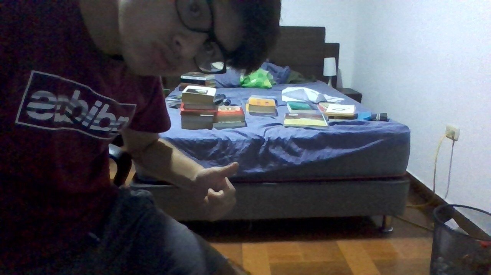
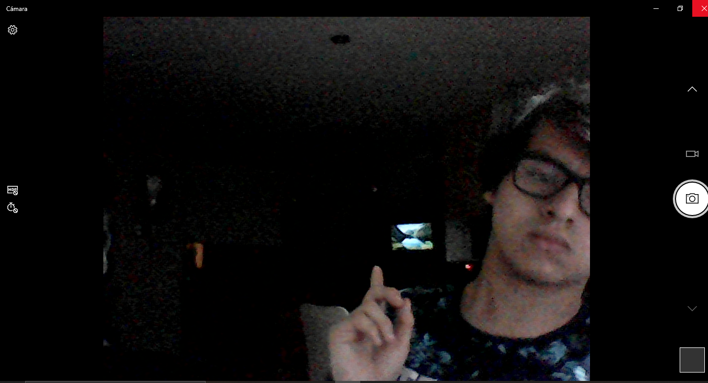

Mientras el ciudadano deba esclavisarse 20 años para obtener una parcela de propiedad que legitimamente se merece por derechos humanos. La unica senda eficaz sera la invasion y la fuerza.
El ultimo poeta maldito del Perú:

Tengo que pasar ese maldito curso si o si, y no se que hacer. No se si sere capaz.
Tengo que idear una estrategia, pero no se si hacer grupo con los vagos de mis amigos
o buscar gente que sepa del curso para tener mas probabilidades de aprobar
¿Que hago? ¿Que mierda hago? Me esforzare lo maximo posible asi mi recompensa sea nula
Lagrimas brotan de mis ojos al leer tu carta de despedida turururu
entonces si no eras tu ¿quien fue todo este tiempo?
mis libros pendientes para este año  (aún no compro otros lentes)
No puedo recoger un paquete de Shalom por qué aún no tengo mi puto DNI, aparte tendré que pagar un adicional de talvez tres decenas de soles, ya que me darán el documento dentro de 20 días. Y para cerrar con broche de oro, se terminaron de romper mis lentes. Por suerte tengo los viejos, los que también están rotos pero no las lunas, y estos me traen muchos recuerdos. Recuerdos cuando no sabía amar, cuando aprendí amar y cuando falle amar. Ahora me los pongo, pero con una esperanza de poder amar otra vez.
Malditoseas Shalom
Hoy me doy cuenta que perdi mi DNI, que tengo que hacer una solicitud para matricularme en un curso que jale, y aun peor no soluciono el tema del examen medico, por consiguiente: no puedo matricularme.
El dia de ayer fui hasta la ciudad universitaria para hacer mi examen medico obligatorio para la matricula que no hise. Me comi tres horas de trafico en una Lima de 38 grados celcius, para que me digan que tenia que hablar con la Asistente Social de la fcm. Y al llegar a la oficina, con un pie doblado, no se encontraba.
Hace varios meses que no toco ni una línea de código. Y hace poco menos de eso, no escribo ni corrijo NINGUNO de mis escritos. Ay dios no sé que hago. Me prometí que iba a corregir mi antología, pero nada de nada... Pero quiero hacer una web. Una donde pueda subir mis textos más rápidos y todo sea más efímero. Yo que sé, tal vez este así porque por alguna razón aún no quito tu sonrisa de mi mente. (y escribo ya que la vi hoy)
Acabo de terminar mi primera antología, siento que no tiene ni pies ni cabeza, una tremenda mierda de unas pocas decenas de páginas. Tal vez en este verano la corrija, talvez en este otoño la publique y talvez en este invierno me vaya al carajo.
Salgo de la universidad o de mi casa y veo el Perú. El Perú que nadie quiere escribir o mostrar. Tanto contenido, tantos conflictos, tantos problemas. Este es el ecosistema perfecto para engendrar un buen escritor, o también un buen perdedor... Sin embargo con todos estos estímulos ¿Estaré preparado para plasmar en papel el Perú que me toco vivir?
¿Qué día nos encontramos “casualmente” en la FIL?
causa, muy rencorosa la gente :C
No, definitivamente sigo siendo un vago, pero al menos ahora leo a Borges.
Ya pasaron muchos atardeceres, muchos amores, muchos labios, muchos olvidos, muchos taxis y aún sigo preparando las canciones para cuando te vea.
-Te voy a hacer una pregunta- dice Santiago-. ¿Tengo cara de desgraciado?-.
Talvez no deba verte hoy dia y perderme en mi herida
POR EL AMOR DE DIOS DEJEN DE HACER TANTO JALEO CON "LIGHTYEAR". LOS MEDIOS QUE PUBLICAN ESTO SOLO QUIEREN MAS VISTAS PARA GANAR MÁS DINERO, NO SEAN GILES Y SE PONGAN A PELEAR EN LOS COMENTARIOS GENERANDO MAS PUBLICIDAD GRATIS A SU PAGINA, ELLOS NO QUIEREN DEFENDER IDEALES, SOLO QUIEREN $$$.
Te doy todo, quieres más ¿Es que nunca comprenderás a un pobre pibe?
Te doy Dios, quieres más ¿Es que nunca comprenderás a un pobre pibe?
Solo una señal y me veras intentandolo
Otro atardecer... ¿Cuántos más habrá?

Ojalá nunca hayas leído nada de lo que te he escrito, porque me destrozaría saber que a pesar de eso no me has buscado- Mario Benedetti. (¿O tal vez si?)
No es quien te extraña a las 2 de la mañana cuando está solo en su cuarto y no puede dormir. Es quien te extraña a las 3 de la tarde cuando se está riendo con sus amigos y piensa: "Ojalá estuviera aquí"-Bukowski.
2022
He estado pensansando toda mi vida en el infinito concepto de esta que ahora lo finito me esta castigando.
Que raro es el juego de la guerra... La jugada ganadora (que nunca falla) es no jugar.
Si vendo mi alma, ¿quién la comprará? Si compro tu tiempo nunca mía seras. Por eso es que vago y esa es la verdad. Si miento un poquito ya me perdonarás
Tanta impotencia de querer tenerlo todo, pero temor para cumplirlo.
Pienso mejor cuando estoy con chela. Debo volver a escribir mas seguido, pero ahora ebrio.
Hay días en que la recuerdo y me pregunto ¿Qué estará haciendo? Hay noches en las que la extraño y me pregunto ¿Qué me estoy haciendo?- Mario
¿Quién es el patrón ahora? el dios con su poder o el hombre con su astucia.
Lo ultimo que escucharon mis compañeros de clase antes de apagar mi micro: "Papá pasame papel higienico".
Ni con prestobarba de 7 hojas podras arrancar esos bellos momentos que pasaste conmigo bb
Baby, ya te perdí, pero quiero que me mires y me digas que todavía me recuerdas
Profe, como que soy el unico que saco negativo.
Mi profe tremendo Hippie; Musica clasica de fondo, amante de la naturaleza, una peculiar tranquiliad cuando habla y un pequeño humo que sale cuando prende su camara.
mientras más dificil sea el problema, más ganas de decir "ez" dan.
Fuiste tan dulce nena pero a la vez perversa; siempre me hablabas de morir. Te seguí los pasos hasta que tu locura me comenzaba a destruir
Creo que soy el único intento de filósofo en 2022 que apoya el libre mercado...
Unas ganas de grabar una pelicula con una camara antigua que tenga planos de 20 min de solo gente caminando para luego rodarla en un festival de cine y despues quemar la cinta frente a todos y que digan Eres un puto genio.
A los griegos les gustaba la proporcionalidad en su cuerpo osea que todo este parejo, no buscaban estar mamadismos con una espalda anchaza y piernas flacas, sino una hermosa danza del equilibrio en su cuerpo.
Y recuerden, el país más socialista del 2022 (China) tiene campos de concentración.
El resumen de mi vida es "sacrificio"
 Miren, atras mio tengo el abismo